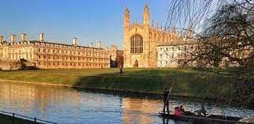

Featured Listings
-
Imperial college London
Imperial College London is a prestigious public research university located in London, United Kingdom. Established in 1907, it is known for its focus on science, engineering, medicine, and business. Imperial College London consistently ranks among the top universities globally and is recognized for its world-class research and academic excellence.
Click Here for more information
University Of Cambridge

The University of Cambridge, located in Cambridge, England, is one of the world's most prestigious and oldest universities. Established in 1209, it has a rich history of academic excellence and has been at the forefront of intellectual and scientific advancement for centuries. The University of Cambridge is consistently ranked among the top universities globally.
Click Here for more information
The University Of Bristol
The University of Bristol is a prestigious public research university located in Bristol, England. It was founded in 1876 and is one of the United Kingdom's leading universities. The University of Bristol is internationally recognized for its academic excellence, research contributions, and vibrant student community.
Click Here for more information